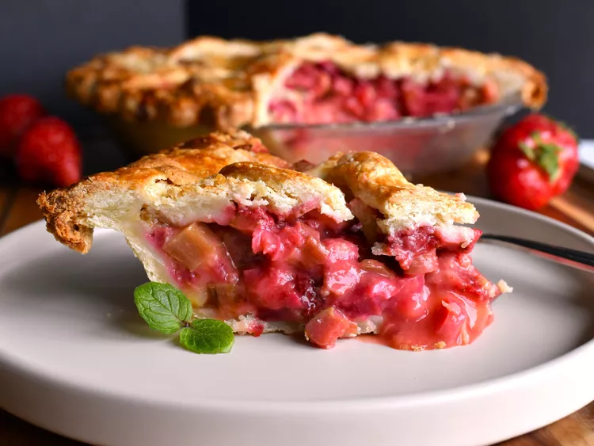

Strawberry Rhubarb Cream Pie

Description
Strawberries and rhubarb are surrounded by a creamy custard in this rich double crust pie.
Ingredients
- 1 ½ cups white sugar
- ¼ cup all-purpose flour
- ¾ teaspoon ground nutmeg
- 3 eggs, beaten
- 4 cups chopped rhubarb
- 3 cups halved fresh strawberries
- 1 recipe pastry for a 9 inch double crust pie
- 1 egg white
Steps
- Preheat oven to 400 degrees F (200 degrees C).
- In a large bowl, mix together sugar, flour, and nutmeg. Stir in eggs. Fold in rhubarb
making
sure to coat well, then do the same with the strawberries. Pour mixture into pie
crust. Place
second crust on top being sure to cut slits into it to vent steam. Brush egg
white on top crust.
- Bake for 50 to 60 minutes in the preheated oven, until rhubarb is tender, and crust is
golden.